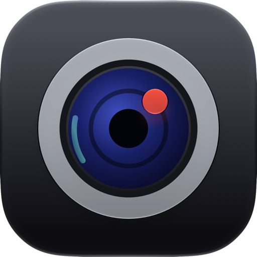
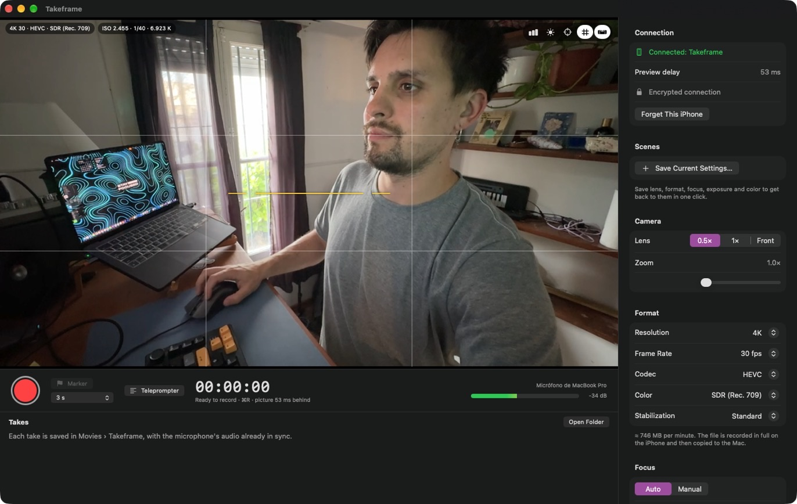
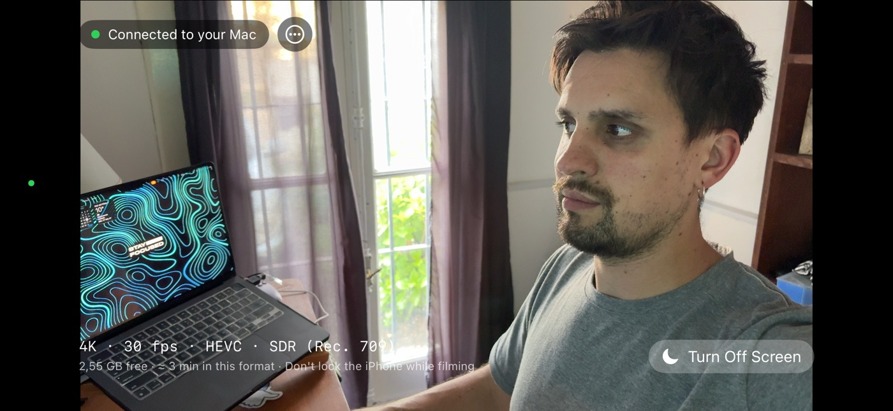
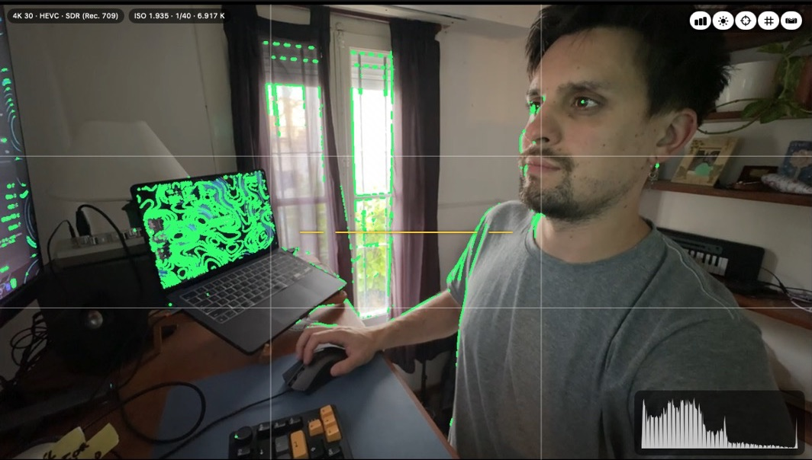
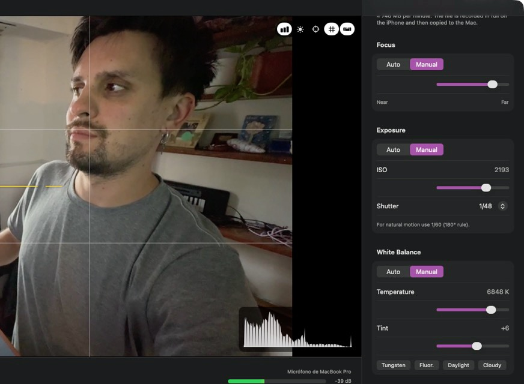
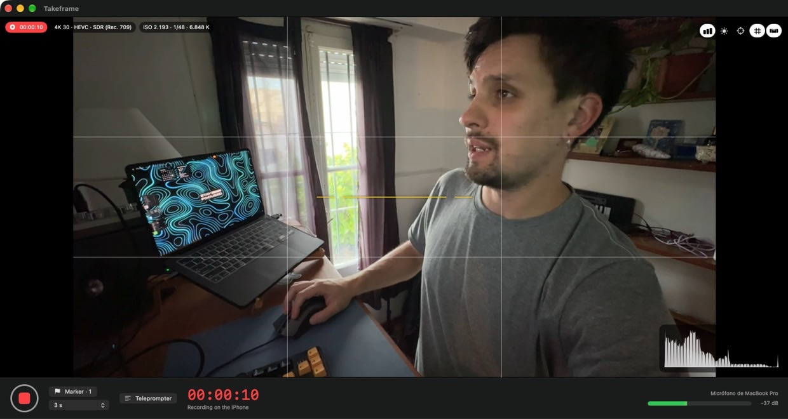

Teleprompter
Your script on your Mac's screen. It starts and stops with the recording.


Takeframe records every take on your iPhone at full quality (4K, HDR, ProRes and Apple Log) while you frame, focus and set exposure live from your Mac. When you stop, the file lands on your Mac with its microphone already in sync.
Free for iPhone and Mac.
Pro is a one-time purchase.


Takeframe is two apps that work together: the camera on your iPhone and the control room on your Mac.
Put it on a tripod, plug it in and open Takeframe. It pairs with your Mac once, with a six-digit code.
Your Mac shows the live picture about 50 ms behind. Change lens, zoom, focus and exposure without getting up.
The iPhone records the take at full quality. When you stop, it's copied to your Mac with your Mac's microphone in sync.
Webcam apps send video to your Mac as it happens, so what you record is only as good as that stream. Takeframe records on the iPhone itself and copies the original file to your Mac when you stop. The live preview is just for watching: if the Wi-Fi hiccups, your take doesn't.
Focus peaking, zebras and a live histogram right on the picturePRO, plus a rule-of-thirds grid and a horizon level to keep every shot straight.
Click anywhere on the preview to focus and expose there.

Lens, zoom, torch, frame rate and stabilization, plus manual focus, ISO, shutter and white balancePRO, all from your desk.
Save the whole setup as a scene and get back to it in one click.

Takeframe records your Mac's microphone in 24-bit while the iPhone films, then lines them up by sound, to the millisecond. No clapperboard, no syncing in the edit.
A countdown gets you ready before each take, and markers let you flag moments as you go.

Each take is copied in full to Movies › Takeframe with the audio joined and the original .wav next to it. Your markers come along as YouTube chapters.
Then it's deleted from the iPhone to free up space for the next one.
00:00 Start 01:12 Marker 1 03:40 Marker 2
Ready · removed from iPhone
Your script on your Mac's screen. It starts and stops with the recording.
3, 2, 1 and you're rolling. Set it to the seconds you need.
Mark moments while you record. They're saved as YouTube chapters.
Rule-of-thirds grid and a horizon level, right on the preview.
Lens, format, focus, exposure and color, saved and back in one click.
Paired with a one-time code and encrypted end to end. No accounts, no cloud, no tracking.
No subscription. One purchase unlocks Pro on your iPhone and your Mac.
Free
Everything you need to start recording.
$19.99 one time
Everything in Free, plus:
US price; the App Store shows it in your currency. ProRes and Apple Log need an iPhone Pro.
An iPhone with iOS 17 or later and a Mac with macOS 15 or later, with Takeframe open on both and Wi-Fi turned on. It works best when both are on the same network. ProRes and Apple Log need an iPhone Pro.
No. Takeframe is made for recording: each take is recorded on the iPhone at full quality and then copied to your Mac. It doesn't show up as a camera in video call or streaming apps.
No. The free version records in 1080p with automatic focus, exposure and white balance, and includes the live preview, sound sync, teleprompter, markers, countdown, grid and level. Pro adds 4K, HDR, ProRes and Apple Log, manual controls, the pro monitor tools and scenes.
No. Takeframe Pro is a one-time purchase that works on your iPhone and your Mac with the same Apple Account. You can restore it anytime from the purchase screen.
The take is recorded on the iPhone, so it keeps going: only the live preview pauses. When your Mac connects again, the finished takes are copied over.
No. Your iPhone and Mac talk directly over your local network, encrypted end to end. There are no accounts, no servers and no tracking.
Each take is recorded in full on the iPhone before it moves to your Mac: about 750 MB per minute in 4K at 30 fps in HEVC. The app shows how many minutes you have left, and each take is deleted from the iPhone once it's safely on your Mac.
In Movies › Takeframe on your Mac: a .mov file with the audio already joined, the original .wav from the microphone and, if you added markers, a text file with them as YouTube chapters.
Something else? Check Support or write to martinpoblet.dev@gmail.com.
Free for iPhone and Mac.
Pro is a one-time purchase.